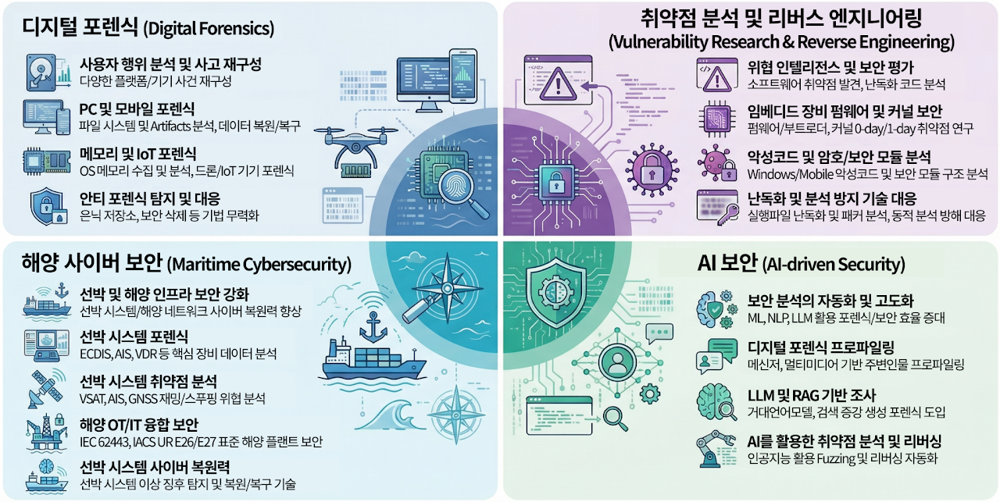

research area
research area · projects · digital forensic investigations

research topics
01 · Digital Forensics
To reconstruct digital incidents and counter anti-forensic techniques across diverse platforms, devices, and environments
- PC & Mobile Forensics (Filesystem, Artifact Analysis)
- Memory Forensics (Windows / macOS / Linux)
- Drone & IoT Device Forensics
- Anti-Forensics Detection & Countermeasures (Hidden Storage, MS Defender Abuse, Secure Deletion)
02 · Vulnerability Research & Reverse Engineering
To discover exploitable weaknesses and deconstruct obfuscated software for threat intelligence and security assessment
- Embedded Device & Peripheral Vulnerability Analysis
- Bootloader & Firmware Security (0-day / 1-day)
- Malware & Cryptographic Module Analysis (Windows, Android, iOS)
- Executable Obfuscation & Packer Analysis (Themida, SecNeo/AppGuard)
- Countermeasures against Static & Dynamic Anti-Analysis Techniques
03 · Maritime Cybersecurity
To investigate, secure, and strengthen the cyber resilience of vessel systems and maritime infrastructure against cyber threats
- Ship System Forensics (ECDIS, AIS, VDR, Integrated Bridge Systems)
- Vessel Network & Communication Vulnerability Analysis (VSAT, AIS Spoofing, GNSS Jamming/Spoofing)
- OT/IT Convergence Security for Maritime Plants (IEC 62443, IACS UR E26/E27)
- Maritime Incident Response & Forensic Readiness
- Cyber Resilience for Autonomous & Unmanned Vessels (Anomaly Detection, Recovery, Continuity of Navigation)
04 · AI-driven Security
To apply machine learning, NLP, and LLM technologies to automate and enhance security analysis and forensic workflows
- NLP-based Messenger & Author Profiling Forensics
- LLM / RAG-based Digital Forensic Investigation
- AI-assisted Reverse Engineering
Collaborations